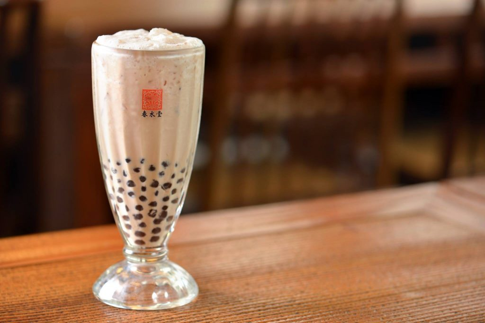
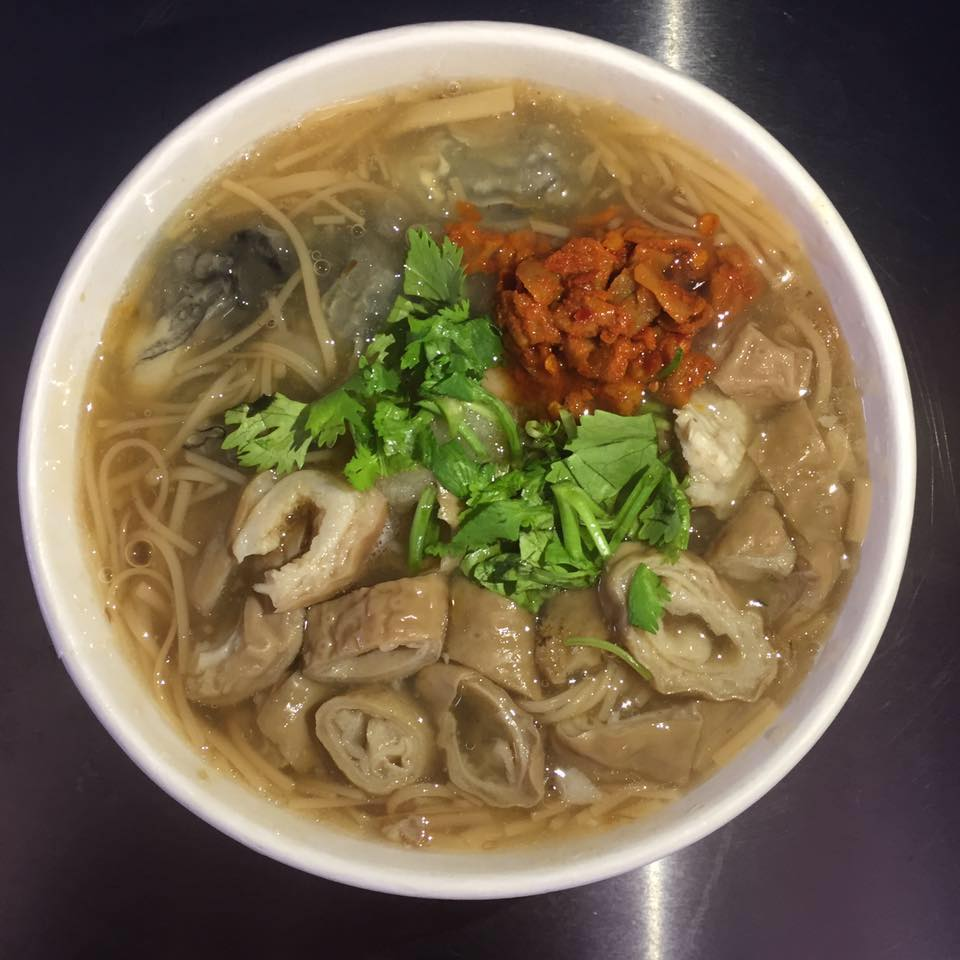
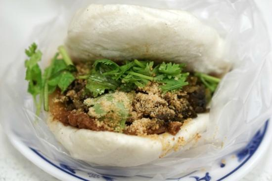
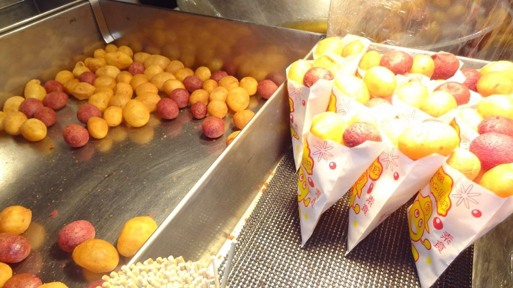

-

Bubble Tea（珍珠奶茶）
Born in Taiwan in the 1980s, this world-famous drink is a must-try. The chewy tapioca pearls (QQ texture, as we call it) are mixed with sweet milk and fragrant black tea. You can find it at tea shops everywhere, each with its own flavor.
€2–3 -

Stinky Tofu（臭豆腐）
You may smell it from afar and wonder if it's really food — but locals call it fragrant! It can be deep-fried, steamed, or braised. Crispy outside, soft inside, soaked with soy sauce, and often eaten with pickled cabbage or chili.
€2–3 -

Oyster Vermicelli（大腸蚵仔麵線）
A comforting bowl of thin noodles cooked in a savory broth with oysters and braised pork intestines. Topped with vinegar, garlic, or chili — especially the famous Ay-Chung Flour-Rice Noodles in Taipei's Ximending.
€2–3 -

Oyster Omelette（蚵仔煎）
This dish has a legendary origin from the 1600s. Local oysters, sweet potato starch, and eggs were combined to make this hearty omelette. Each region has its own twist, so no two oyster omelettes taste the same!
€2–3 -

Gua Bao（刈包）
Often called the "Taiwanese hamburger," it's a fluffy steamed bun filled with braised pork belly, pickled mustard greens, peanut powder, and cilantro. A perfect balance of flavors in every bite.
€1–2 -

Braised Pork Rice（滷肉飯）
The ultimate comfort food for Taiwanese people — minced pork braised in soy sauce poured over white rice. Simple, hearty, and found everywhere in Taiwan. Many locals call it the "taste of home."
€1–2 -

Fried Chicken Cutlet（雞排）
Taiwanese fried chicken is legendary at night markets. Crispy, juicy, and often bigger than your face! It comes in endless flavors: chili powder, seaweed, cheese-filled, honey glazed, or even grilled versions.
€2–4 -

Sweet Potato Balls（地瓜球）
Golden, chewy, and slightly crispy, these little sweet potato balls are a beloved night market dessert. Freshly fried, they puff up into irresistible bite-sized snacks.
€1–2 -

Rice Bun with Sausage（大腸包小腸）
Known as the "Taiwanese hot dog," it's a grilled sticky rice sausage cut open and wrapped around a smaller Taiwanese pork sausage. Topped with garlic, pickles, cilantro, or peanut powder — always draws long lines.
€1–2 -

Mango Shaved Ice（芒果冰）
The star of Taiwanese summer! A mountain of shaved ice topped with fresh, juicy mango, condensed milk, and sometimes ice cream. Sweet, refreshing, and perfect for beating the island's heat.
€4–6